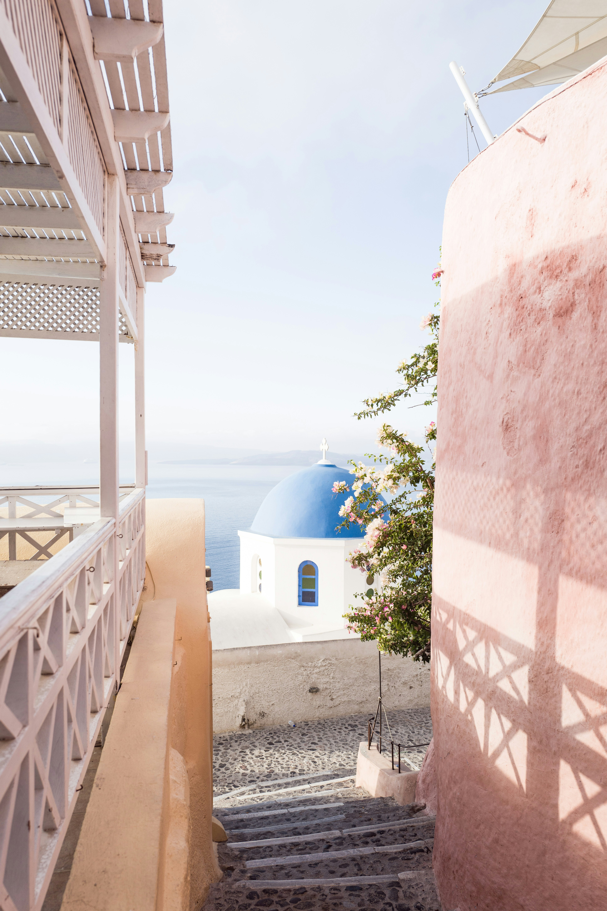
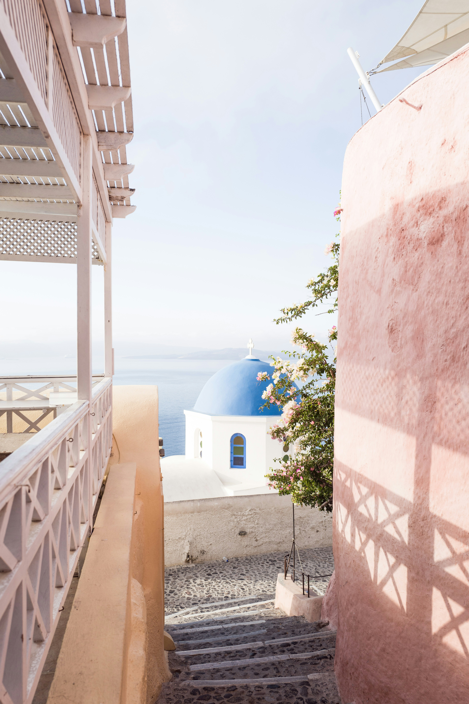
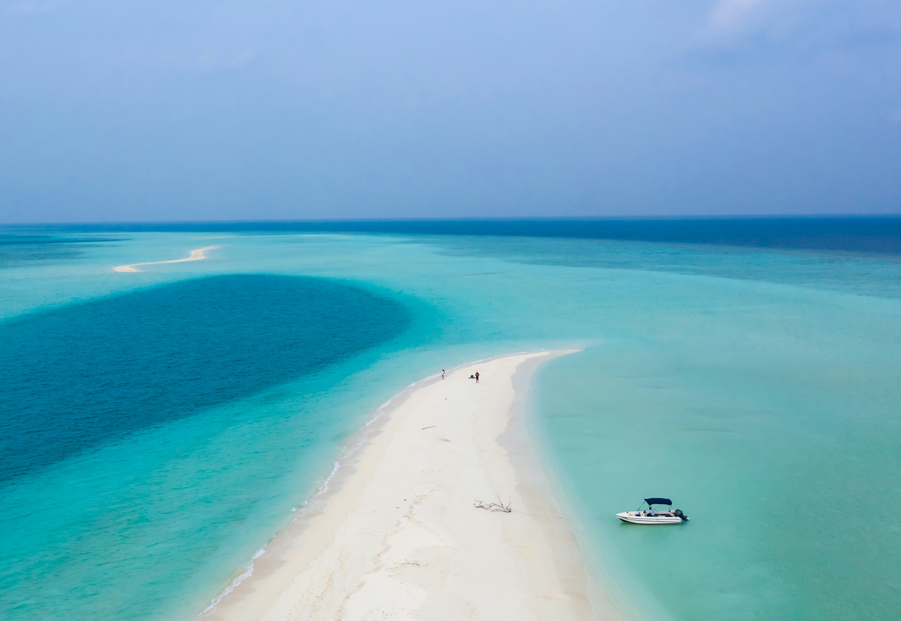
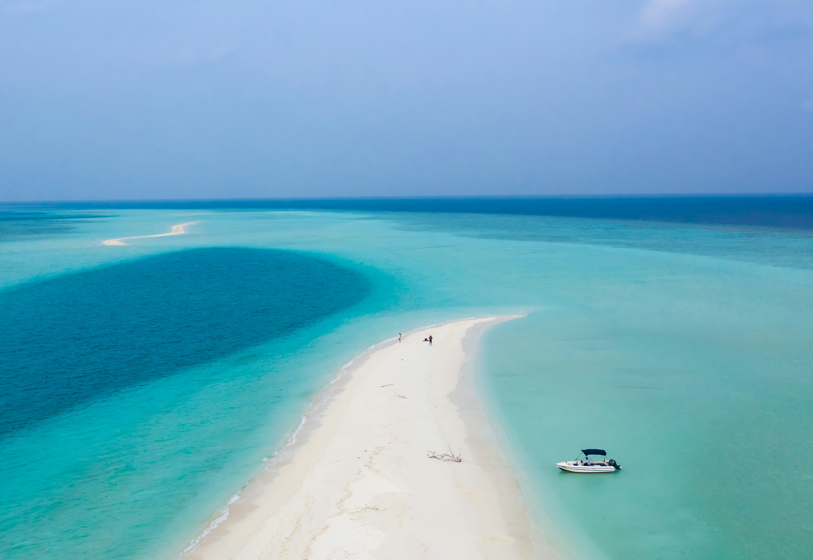

UGENS REJSE DESTINATIONER
Nu er vi gået efteråret i møde, hvilket betyder en helt masse nye lækre destinationer er åbne. September betyder ligeledes studiestart, og der går ikke længe før man trænger til en lille ferie. Derfor har vi fundet de bedste rejse destinationer til efteråret frem.
Tag på festival i Kyoto Japan
Efteråret i Kyoto er en uforglemmelig oplevelse, hvor byens berømte templer og haver omfavnes af de røde og gyldne nuancer af japanske ahorntræer. Dette er en af de bedste tidspunkter at besøge Kyoto, da det milde vejr og de smukke landskaber skaber en fredfyldt atmosfære. Derudover kan man opleve traditionelle japanske festivaller som Jidai Matsuri, hvor kostumerede parader gennemfører historiske rekonstruktioner
Vinoplevelse i Toscana Italien
Efteråret er høsttid i Toscana, hvilket gør regionen til et paradis for mad- og vinelskere. Du kan nyde vinsmagninger på lokale vingårde, deltage i olivenhøst og smage nogle af de fineste italienske retter. Den køligere temperatur og det mere rolige turistmiljø gør det muligt at udforske Toscanas bølgende bakker, middelalderbyer som Siena og Firenze samt den ikoniske Chianti-vinrute i afslappede omgivelser


 
